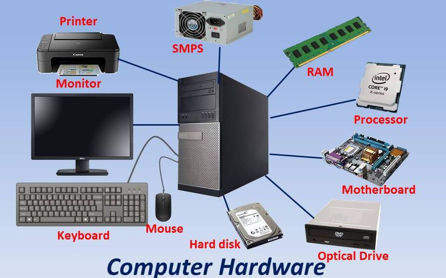

🗓️schedule: 18/03/2024
OBJECTIVES:
- To Understand components
- History (includes self learning)
- Generations of Computers (includes self learning)
To Understand components
Computers were invented to help us with calculations, but today they're much more than that. They're changing the way we communicate, travel, do business, learn, and even create art like music and movies.
Computers have become essential in almost every aspect of life. They help us communicate through email and chat, handle our finances through online banking, book tickets, and enjoy audio and video entertainment.
Being skilled with computers opens up a world of career opportunities. Professionals who understand how to use computers effectively have a better chance of success in today's society.
The amazing thing about computers is their versatility. They can be used almost anywhere and at any time. This chapter will talk about how computers have evolved over time, the people who have shaped the field, and the different parts that make up a computer system.
So what is Computer 🖥️ :
A computer is like a smart electronic device that can save, remember, and work with information. It's a machine that follows instructions to do tasks or solve problems, like doing math or organizing data.
What can you do with computer:
With computers, you can do a lot of different things! At work, people use computers to keep track of information, study data, do research, and handle projects.
At home, you can use computers to search for information, save photos and songs, manage money, play games, and talk to other people online.
There are so many things you can do with a computer, but at its core, it's like a super-fast data organizer.
How does the computer work? 💻
Imagine your mom asks you to make tea ☕️. To do that, you need some specific things: ¾ cup of water , ½ teaspoon of tea leaves 🍃, ½ teaspoon of sugar , and ½ cup of milk 🥛. Now, you have to follow a few steps. First, you need to boil ♨️ the water and milk. Then, you add the tea leaves and sugar. Finally, you pour in the milk. And there you have it, a nice cup of tea! 🫖
We can turn the task of making tea into something a computer can do by creating a program or a set of instructions for the computer to follow.
| INPUT | PROCESS | OUTPUT |
|---|---|---|
| Ingredients required | The actual process | The result |
| 3/4 cup of water, ½ teaspoon tealeaves, 1½ teaspoon sugar and 1½ cup of milk | Boiling water/milk, adding tea-leaves, sugar and milk | Obtain the prepared tea |
Comparing the characteristics of computers with the human body, we can draw some interesting parallels. Just as the human body has its own unique features and capabilities, so do computers. Let's break down these characteristics:
- Speed: ⚡ Just like how the human brain processes information incredibly fast, computers operate at lightning-fast speeds, with electrical pulses traveling almost instantaneously through their circuits.
- Memory: 🧠Just as our brains store important information for later use, computers use primary memory (RAM) to temporarily store data while they're working on it.
- Storage: 📦 Similar to how we store memories and information for later use, computers use secondary storage devices to permanently store data and information.
- Accuracy: ✅ While humans can make mistakes, computers generate precise results without any errors, ensuring high levels of accuracy and consistency.
- Versatility: ğŸ› ï¸ Like humans who can adapt to various tasks, computers are capable of performing a wide range of tasks as long as they can be broken down into logical steps.
- Automation: 🤖 Computers can automate tasks, much like how certain functions in our bodies are automatic and don't require conscious effort.
- Diligence: 💪 Unlike humans, computers don't get tired or lose focus, ensuring consistent performance even over long periods.
- Cost effectiveness: 💰 By reducing paperwork and human effort, computers help save costs, making processes more efficient and economical.
Let's break down the concepts of data and information:
Data: 📊 Data is like a raw collection of things, such as text, numbers, pictures, sounds, or videos. It's like having a bunch of ingredients before you cook a meal. For instance, if you have the word "PARAM" and the number 16, that's data. It's just raw facts and figures waiting to be used.
Information: ℹ️ Information is what happens when we do something with that data. It's like when you take those ingredients and cook them into a delicious meal. In the computer world, information is the result of processing data. For example, if you take the name "PARAM" and the age 16 and put them together, you get useful information that tells you someone's name and age. This information is meaningful and can help people make decisions.
let's use a simple example to illustrate the difference between data and information:Data: 📊 Imagine you have a bunch of puzzle pieces scattered on a table. Each piece on its own doesn't tell you much. They're just individual pieces waiting to be put together. This is like data – it's just raw pieces of information that haven't been organized or processed yet.
Information: ℹ️ Now, let's say you start putting those puzzle pieces together according to their shapes and colors. As you assemble them, they start forming a picture – maybe it's a picture of a beautiful sunset. Now, you have something meaningful and understandable. This is like information – it's the result of processing and organizing the data (the puzzle pieces) into something that conveys meaning and can be understood by others.
Computers have two main parts: hardware and software.
Hardware is the physical stuff, like the screen and keyboard.
Software are the programs that make the computer work, like games or Microsoft Word, etc..
Computer Hardware:
Hardware is like the body of a computer - it's the stuff you can touch and see. This includes things like the case, which holds all the parts together, and everything inside it. Hardware is responsible for carrying out instructions and doing calculations.

Some examples of hardware include the monitor (the screen you look at), the keyboard (what you type on), the mouse (what you move around to control the computer), and the printer (which prints out documents). These are often called hardware devices or just devices.
Common hardware components include things like keyboards, mouse, microphones, scanners, webcams, printers, monitors, speakers, the main box where all the parts are stored (called the system unit), hard drives, external hard drives, CD/DVD drives, USB flash drives, memory cards, and modems. These are all physical parts of the computer that help it do different tasks.
Computer Software
Software is like a set of instructions that tells the computer what to do. There are two main types of software:
- System Software: This is the software that manages the computer and its parts. It makes sure everything runs smoothly. System software acts like a bridge between you, the user, the applications you use (like Word or Photoshop), and the computer's hardware.
- Application Software: These are programs that you use to do specific tasks, like write documents, browse the internet, or play games. Application software is designed to make your life easier by helping you be more productive or assisting you with personal tasks.
Now let's break down the functional components of a computer in simple terms:
Input Devices: 🖱️ Input devices are like the computer's ears and eyes. They let you give commands or put information into the computer. Some examples are the keyboard, mouse, microphone, scanner, and webcam.
Central Processing Unit (CPU): 🧠The CPU is like the brain of the computer. It reads and carries out the instructions given by programs. It makes decisions, does calculations, and controls how the computer works. The CPU has different parts, like the arithmetic and logic unit (ALU), control unit, and memory unit.
- Memory Unit: 💾 This is like the computer's short-term memory. It stores data, program instructions, and results temporarily before sending them to other parts of the computer. It's also known as RAM.
- Arithmetic and Logical Unit (ALU): ➕🔍 The ALU is where all the math and logic happens. It does things like addition, subtraction, and logical operations. It takes data from the memory, processes it, and sends it back.
- Control Unit: 🮠The control unit is like the conductor of an orchestra. It makes sure everything runs smoothly, follows the right sequence of instructions, and coordinates all the parts of the computer.
Storage Unit: 💾💿 Once the CPU processes the data, the results are stored in the storage unit. This is like the computer's long-term memory. It holds more data than the memory unit and keeps it even when the power is off.
Output Unit: 🖨️🖥️ Output devices are like the computer's mouth and eyes. They show or give you the results of what the computer has done. Common examples are printers, monitors, and speakers. They present information in a way that you can understand.

Evolution of Computers:(includes self learning)
Computers have come a long way since they were first invented. 🚀 In the beginning, computers were huge machines that filled entire rooms and were used mainly for complex calculations. Over time, they became smaller, faster, and more powerful, thanks to advancements in technology. 💻 As technology evolved, computers became more accessible to everyday people, leading to the rise of personal computers that could be used at home or in the office. ğŸ 💼 With the advent of the internet, computers became even more indispensable, connecting people around the world and opening up a whole new world of possibilities. Today, computers are everywhere, from smartphones and tablets to smart TVs and even wearable devices. They continue to evolve, becoming smarter, more connected, and more integrated into our daily lives. 🌐📱
Intrested can have A look at this video👇Generations of Computers (includes self learning):
Computers have evolved over time into different generations, each bringing new advancements and capabilities. 🚀 The first generation of computers were huge machines that used vacuum tubes and were mainly used for basic calculations. 📠Then came the second generation, which used transistors instead of vacuum tubes, making computers smaller, faster, and more reliable. 💡 In the third generation, computers started using integrated circuits, allowing for even greater speed and efficiency. 🏎️ The fourth generation brought about microprocessors, which made computers even smaller and more powerful, leading to the rise of personal computers. 💻 Finally, we're now in the fifth generation, where computers are becoming increasingly interconnected and intelligent, with advancements in areas like artificial intelligence and machine learning. 🤖 Each generation has built upon the previous one, paving the way for new possibilities and innovations in the world of computing. 🌐🔬
For more details:
- Match The following(press on start and make it full screen)(any unknown parts clarify with seniors)
- list some unique input & output devides
- Give Input, Process and Output for the process of making a chair 🪑 (like how you did for prepration of tea)
- Explore what is RAM & its type
- Explore what is secondary storage device and its type
- Explore aboute cache memory
- Explore about how computer works with binary (will cover more details on this in further session)
Additional Source:
- Watch basics of computer in details:(mandatory)
- Difference between Primary and Secondary Memory
- Computer Memory
- Cache Memory in Computer Organization
- What does what in your computer? Computer parts Explained
-Creadted by Vedanth V
Assignment answers:(Updating EOD)